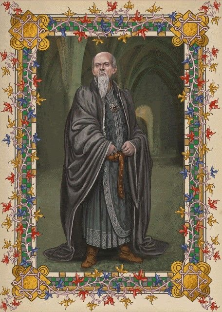
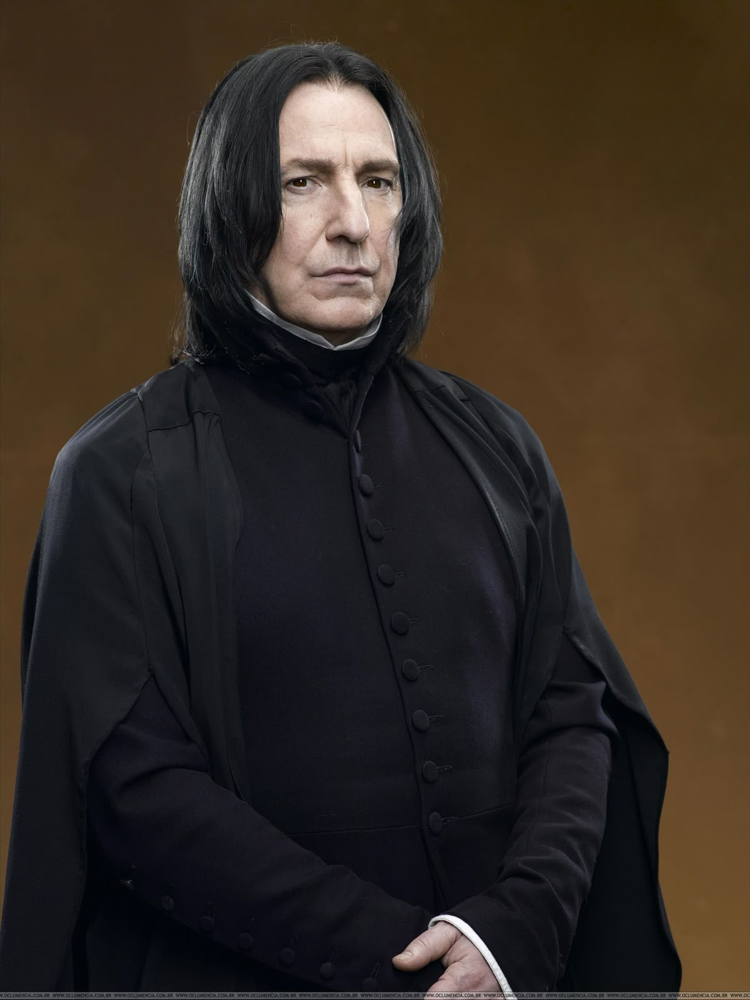

Bem vindos a SONSERINA

Fundador da casa Sonserina
Salazar era um bruxo ambicioso, inteligente e poderoso, famoso por dominar a Linguagem das Serpentes (ofidioglossia). Valorizava pureza de sangue e tinha uma visão mais rígida sobre quem deveria estudar em Hogwarts. Foi ele quem criou a Câmara Secreta e escondeu o basilisco.
Personagens mais famosos

Draco Malfoy era realemnte malvado ou incompreendido?

Severus Snape, o professor de temperamento imprevisível com alianças profundas

Bellatrix Lestrange, a comensal da morte e com a sua lealdade devota a lord Voldemort
Diretor da casa
Severus Snape